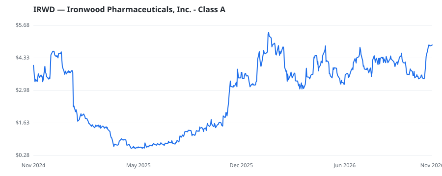

bullish · bearish · n/a — dots: price>SMA10 · SMA10>SMA50 · SMA50>SMA200 · up>down volume (20d)
Pharmaceuticals & Biotech · small cap

Ironwood Pharmaceuticals Inc is a biotechnology company developing and commercializing life-changing therapies for people living with gastrointestinal, or GI, and rare diseases. It is focused on the development and commercialization of inventive product opportunities in areas of unmet need, leveraging its demonstrated expertise and capabilities in GI and rare diseases. LINZESS is its commercial product. LINZESS is also available for the treatment of adults with IBS-C or CIC in Mexico, adults with IBS-C or chronic constipation in Japan, and adults with IBS-C in China. Linaclotide is available u PHARMACEUTICAL PREPARATIONS · website
| Revenue | $296.2M | Net income | $24.0M |
|---|---|---|---|
| Operating income | $98.5M | Diluted EPS | $0.15 |
| Assets | $396.9M | Equity | $-261.8M |
This name produced 0.5% of the ranked funds’ total alpha.
| Fund | Fund alpha vs SPY | Position | % of book |
|---|---|---|---|
| Sarissa Capital Management LP | +14% | $36M | 23.8% |
Hedge data: SEC EDGAR 13F · ranked funds beat SPY in >50% of their quarters · fund alpha = mirror-portfolio return minus SPY.